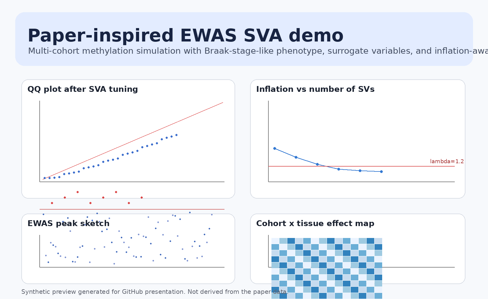

This page summarizes the additional use case added to the repo: a synthetic multi-cohort methylation EWAS designed to resemble the modeling pattern of a published Alzheimer's disease meta-analysis. It is inspiration, not reproduction.

notebooks/10_meta_analysis_ewas_sva_demo.ipynb